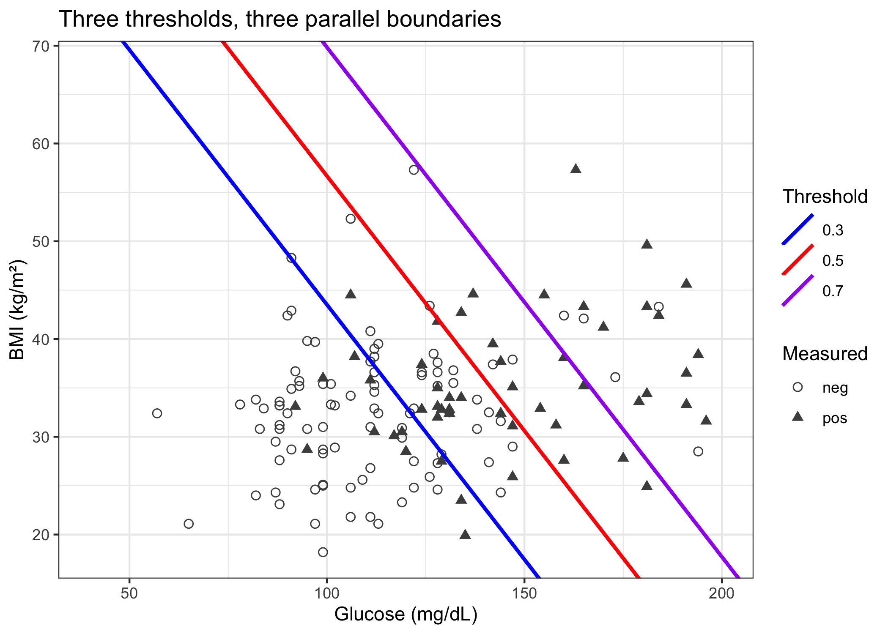
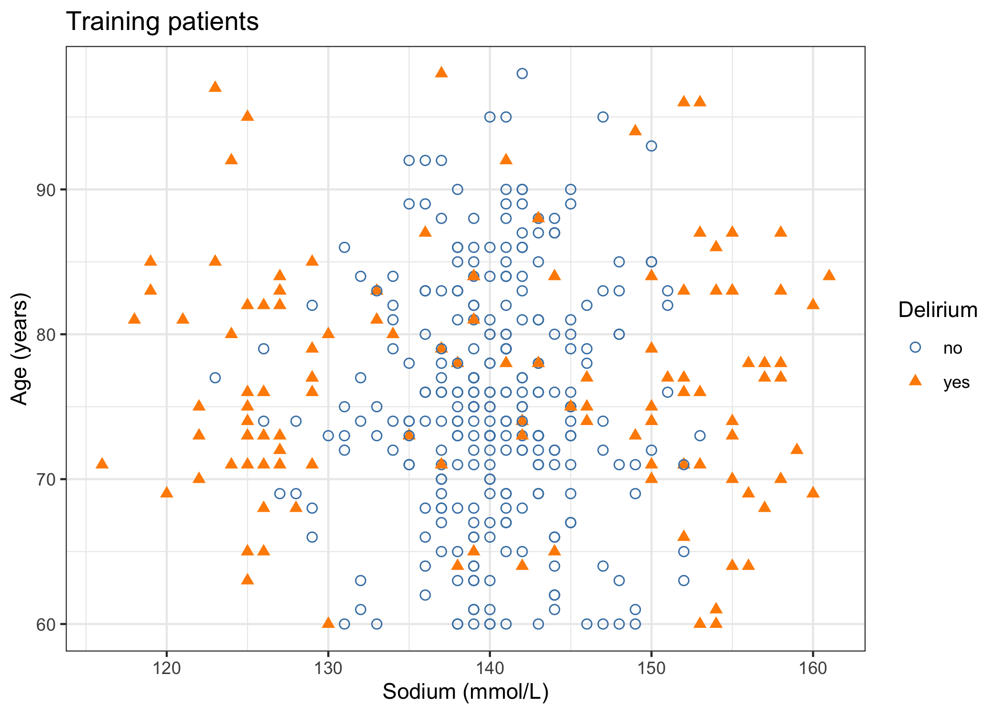
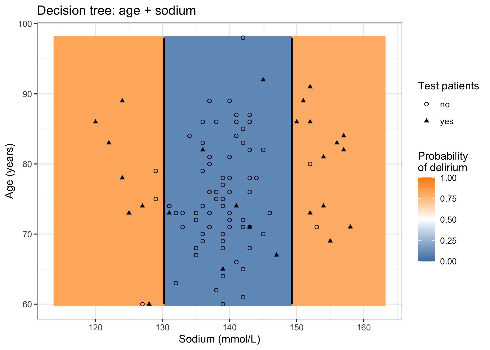
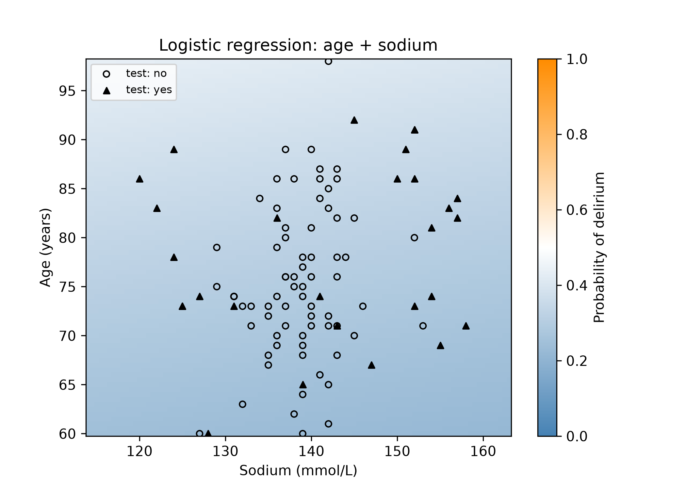

# Packages for this exercise. If one is missing, remove the # and run this line once:
# install.packages(c("tidyverse", "tidymodels"))
library(tidyverse)
library(tidymodels)
theme_set(theme_bw())Exercise 4.4 — The decision boundary
In Exercise 4.1 the map of the logistic regression’s probability had a black line across it: to one side the model says pos, to the other neg. That line is the decision boundary. In this exercise you work it out from the coefficients, see why it is straight, move it with the threshold, and meet data where no straight line can do the job.
- Part 1. Find the boundary of the glucose and BMI model by hand, and check it on the map.
- Part 2. Change the threshold, as in Exercise 4.3, and see the line move.
- Part 3. A dataset where the risk is high at both ends of a measurement. A straight boundary fails; a squared term or a tree gives a boundary that bends.
NoteThe plots are for looking at
The code for the plots is folded away under Code for this plot (optional). You do not need to write it, but it is in the download if you want it.
Download this exercise as an R Markdown notebook (.Rmd): the text and every code cell of the R version, including the code for the plots, with the blanks left for you to fill in. Open it in RStudio and run it a chunk at a time.
Packages and data
The same 750 people and the same split as in Exercise 4.1.
diabetes <- read_csv("data/diabetes_clean.csv") |>
select(glucose, mass, diabetes) |>
mutate(diabetes = factor(diabetes, levels = c("neg", "pos")))
test_rows <- seq(1, nrow(diabetes), by = 5) # every fifth person is held back
train <- diabetes[-test_rows, ]
test <- diabetes[test_rows, ]Part 1 — Where the class changes
Fit the model from Exercise 4.1, Part 2: diabetes from glucose and BMI.
log_model <- logistic_reg() |>
set_engine("glm") |>
set_mode("classification")
log_fit <- log_model |>
fit(diabetes ~ glucose + mass, data = train)
b <- log_fit$fit$coefficients # intercept, glucose, BMI
b#> (Intercept) glucose mass
#> -7.00363758 0.03355403 0.06437328The model is a straight line on the log-odds scale (Exercise 4.2):
\[\text{log-odds} = \beta_0 + \beta_1 \times \text{glucose} + \beta_2 \times \text{BMI}\]
With a threshold of 0.5, the class changes where the probability is 0.5. A probability of 0.5 is odds of 1 and log-odds of 0. So the boundary is every combination of glucose and BMI where
\[\beta_0 + \beta_1 \times \text{glucose} + \beta_2 \times \text{BMI} = 0\]
For a given BMI, solve for glucose:
\[\text{glucose} = \frac{-\beta_0 - \beta_2 \times \text{BMI}}{\beta_1}\]
Task 1a — The boundary at a BMI of 30 and of 45
Round the coefficients printed above to four significant figures and calculate, by hand, the glucose at which the class changes for a BMI of 30. Then do the same for a BMI of 45.
# Replace every ______ below, then run this cell.
boundary_30 <- (-(______) - ______ * 30) / ______
boundary_45 <- (-(______) - ______ * 45) / ______
c(boundary_30, boundary_45)
TipStuck?
In order: the intercept, the BMI weight, and the glucose weight. The intercept is negative, so minus the intercept is a positive number.
Check it with predict(): a patient on the boundary should get a probability of 0.5.
predict(log_fit, new_data = data.frame(glucose = 151.2, mass = 30), type = "prob")#> # A tibble: 1 × 2
#> .pred_neg .pred_pos
#> <dbl> <dbl>
#> 1 0.500 0.500Every point on the boundary satisfies one linear equation in glucose and BMI, so the boundary is a straight line. Here it is, drawn from the coefficients, over the test patients:
Code for this plot (optional)
# the boundary written as BMI = a + s * glucose
ggplot(test, aes(x = glucose, y = mass, shape = diabetes, colour = diabetes)) +
geom_point(size = 2) +
geom_abline(intercept = -b[1] / b[3], slope = -b[2] / b[3], linewidth = 1) +
annotate("point", x = c(151.2, 122.4), y = c(30, 45), colour = "red", size = 3) +
scale_shape_manual(values = c(neg = 1, pos = 17)) +
scale_colour_manual(values = c(neg = "steelblue", pos = "darkorange")) +
coord_cartesian(xlim = c(40, 200), ylim = c(18, 68)) +
labs(x = "Glucose (mg/dL)", y = "BMI (kg/m²)", shape = "Measured", colour = "Measured",
title = "The decision boundary at a threshold of 0.5")
ImportantThink about it
- The model is right for 76% of the test patients. Looking at the plot, why can no straight line do much better with these two measurements?
- A model with three predictors (glucose, BMI and age) also has a boundary. What shape would it be?
Part 2 — The threshold moves the line
Exercise 4.3 changed the threshold. A threshold \(t\) is a probability, so it has a log-odds, \(\log\big(t / (1 - t)\big)\), and the boundary is where the model’s log-odds equal it:
\[\beta_0 + \beta_1 \times \text{glucose} + \beta_2 \times \text{BMI} = \log\left(\frac{t}{1-t}\right)\]
Only the right-hand side changes, so the line keeps its tilt and moves sideways.
Task 2a — The log-odds of three thresholds
# Replace every ______ below, then run this cell.
thresholds <- data.frame(t = c(0.3, 0.5, 0.7)) |>
mutate(log_odds = log(______ / (1 - ______)),
glucose_at_BMI_30 = (log_odds - b[1] - b[3] * 30) / b[2])
thresholds
TipStuck?
Both blanks are the threshold column, t.
Code for this plot (optional)
lines_t <- data.frame(t = factor(c(0.3, 0.5, 0.7)),
log_odds = log(c(0.3, 0.5, 0.7) / (1 - c(0.3, 0.5, 0.7)))) |>
mutate(intercept = (log_odds - b[1]) / b[3], slope = -b[2] / b[3])
ggplot(test, aes(x = glucose, y = mass)) +
geom_point(aes(shape = diabetes), size = 2, colour = "grey30") +
geom_abline(data = lines_t, aes(intercept = intercept, slope = slope, colour = t),
linewidth = 1) +
scale_shape_manual(values = c(neg = 1, pos = 17)) +
scale_colour_manual(values = c("0.3" = "blue", "0.5" = "red", "0.7" = "purple")) +
coord_cartesian(xlim = c(40, 200), ylim = c(18, 68)) +
labs(x = "Glucose (mg/dL)", y = "BMI (kg/m²)", shape = "Measured", colour = "Threshold",
title = "Three thresholds, three parallel boundaries")
Everyone to the right of a line is predicted pos at that threshold. Count them:
test_probs <- predict(log_fit, new_data = test, type = "prob")$.pred_pos
c(t_0.3 = sum(test_probs >= 0.3), t_0.5 = sum(test_probs >= 0.5),
t_0.7 = sum(test_probs >= 0.7))#> t_0.3 t_0.5 t_0.7
#> 74 35 19
ImportantThink about it
Lowering the threshold from 0.5 to 0.3 more than doubles the number of test patients called pos. In the language of Exercise 4.3, what happens to the sensitivity and the specificity, and where do you see that on the plot?
Part 3 — When a straight line cannot work
data/sodium_delirium.csv holds 500 older patients admitted to hospital: their age, their blood sodium in mmol/L (normal is about 135 to 145), and whether they developed delirium during the admission. If you do not have it yet, download sodium_delirium.csv into your data folder.
delirium <- read_csv("data/sodium_delirium.csv") |>
mutate(delirium = factor(delirium, levels = c("no", "yes")))
test_rows_d <- seq(1, nrow(delirium), by = 5) # every fifth patient is held back
train_d <- delirium[-test_rows_d, ]
test_d <- delirium[test_rows_d, ]
count(train_d, delirium)#> # A tibble: 2 × 2
#> delirium n
#> <fct> <int>
#> 1 no 280
#> 2 yes 120Code for this plot (optional)
ggplot(train_d, aes(x = sodium, y = age, shape = delirium, colour = delirium)) +
geom_point(size = 2) +
scale_shape_manual(values = c(no = 1, yes = 17)) +
scale_colour_manual(values = c(no = "steelblue", yes = "darkorange")) +
labs(x = "Sodium (mmol/L)", y = "Age (years)", shape = "Delirium", colour = "Delirium",
title = "Training patients")
Delirium is common when sodium is too low and when it is too high, and rarer in between. Fit the same kind of model as before, with age and sodium:
line_fit <- log_model |>
fit(delirium ~ age + sodium, data = train_d)
line_fit$fit$coefficients#> (Intercept) age sodium
#> -2.112098322 0.022834255 -0.003350716Code for this plot (optional)
grid_d <- expand_grid(sodium = seq(114, 163, by = 0.5), age = seq(60, 98, by = 0.5)) |>
mutate(sodium_dev2 = (sodium - 140)^2)
delirium_map <- function(fit, title) {
grid_d$prob <- predict(fit, new_data = grid_d, type = "prob")$.pred_yes
ggplot(grid_d, aes(x = sodium, y = age)) +
geom_raster(aes(fill = prob)) +
geom_contour(aes(z = prob), breaks = 0.5, colour = "black", linewidth = 0.8) +
geom_point(data = test_d, aes(shape = delirium), size = 1.5) +
scale_fill_gradient2(low = "steelblue", mid = "white", high = "darkorange",
midpoint = 0.5, limits = c(0, 1)) +
scale_shape_manual(values = c(no = 1, yes = 17)) +
labs(x = "Sodium (mmol/L)", y = "Age (years)",
fill = "Probability\nof delirium", shape = "Test patients", title = title)
}
delirium_map(line_fit, "Logistic regression: age + sodium")
The weight for sodium is almost exactly 0, and the map has no boundary at all: the probability never reaches 0.5, so the model says no for every patient. A straight line has to put “high risk” on one side. Here the high-risk patients are on both sides, so the best straight line the model can find is one that hardly uses sodium.
Task 3a — Give the model a predictor it can use
How far sodium is from normal matters, not which direction. Make a new column, the squared distance from 140, and add it to the model. The model is still a logistic regression, linear in the predictors you give it, but one of those predictors is now curved in sodium.
# Replace every ______ below, then run this cell.
train_d <- train_d |> mutate(sodium_dev2 = (sodium - 140)^2)
test_d <- test_d |> mutate(sodium_dev2 = (sodium - 140)^2)
curve_fit <- log_model |>
fit(delirium ~ age + sodium + ______, data = train_d)
curve_fit$fit$coefficients
TipStuck?
Add the name of the new column to the formula, after a +.
Code for this plot (optional)
delirium_map(curve_fit, "Logistic regression: age + sodium + (sodium - 140)²")
A tree needs no new column: it can split on sodium twice.
tree_fit <- decision_tree() |>
set_engine("rpart") |>
set_mode("classification") |>
fit(delirium ~ age + sodium, data = train_d)
tree_fit#> parsnip model object
#>
#> n= 400
#>
#> node), split, n, loss, yval, (yprob)
#> * denotes terminal node
#>
#> 1) root 400 120 no (0.7000000 0.3000000)
#> 2) sodium>=130.5 344 74 no (0.7848837 0.2151163)
#> 4) sodium< 149.5 288 29 no (0.8993056 0.1006944) *
#> 5) sodium>=149.5 56 11 yes (0.1964286 0.8035714) *
#> 3) sodium< 130.5 56 10 yes (0.1785714 0.8214286) *Code for this plot (optional)
delirium_map(tree_fit, "Decision tree: age + sodium")
How often is each model right on the 100 test patients, and what does each say about an 80-year-old with a low, a normal and a high sodium?
data.frame(
model = c("straight line", "with (sodium - 140)²", "tree", "always says no"),
accuracy = c(mean(predict(line_fit, new_data = test_d)$.pred_class == test_d$delirium),
mean(predict(curve_fit, new_data = test_d)$.pred_class == test_d$delirium),
mean(predict(tree_fit, new_data = test_d)$.pred_class == test_d$delirium),
mean(test_d$delirium == "no")))#> model accuracy
#> 1 straight line 0.72
#> 2 with (sodium - 140)² 0.88
#> 3 tree 0.88
#> 4 always says no 0.72patients <- data.frame(age = 80, sodium = c(126, 140, 154)) |>
mutate(sodium_dev2 = (sodium - 140)^2)
patients |>
mutate(straight_line = predict(line_fit, new_data = patients, type = "prob")$.pred_yes,
with_squared = predict(curve_fit, new_data = patients, type = "prob")$.pred_yes,
tree = predict(tree_fit, new_data = patients, type = "prob")$.pred_yes)#> age sodium sodium_dev2 straight_line with_squared tree
#> 1 80 126 196 0.3301408 0.87867851 0.8214286
#> 2 80 140 0 0.3198507 0.08123036 0.1006944
#> 3 80 154 196 0.3097329 0.90510235 0.8035714
ImportantThink about it
- The straight-line model is right for 72% of the test patients. Is that a good model?
- The straight-line model says sodium hardly matters. Is that true?
- Describe the boundary of the model with the squared term, and of the tree.
ImportantLearning points
- The decision boundary is where the predicted probability equals the threshold. For a logistic regression that is where the log-odds equal \(\log\big(t/(1-t)\big)\): 0 for a threshold of 0.5.
- A logistic regression’s boundary is straight (flat) in its predictors. Changing the threshold moves it without changing its tilt.
- When the risk is high at both ends of a measurement, no straight line can separate the classes, and a weight near 0 can hide a strong relationship.
- A boundary can bend if you give the model a curved predictor, such as a squared term, or use a model that bends on its own, such as a tree.
Download this exercise as a Jupyter notebook (.ipynb): the text and every code cell of the Python version, including the code for the plots, with the blanks left for you to fill in. Open it in Jupyter or VS Code and run it a cell at a time.
Packages and data
# Packages for this exercise. If one is missing, install it once from a terminal
# (in a Jupyter notebook, type %pip instead of pip):
# pip install pandas numpy matplotlib scikit-learn
import pandas as pd
import numpy as np
import matplotlib.pyplot as plt
from sklearn.linear_model import LogisticRegression
from sklearn.tree import DecisionTreeClassifier, export_textThe same 750 people and the same split as in Exercise 4.1.
diabetes = pd.read_csv("data/diabetes_clean.csv")
diabetes = diabetes[["glucose", "mass", "diabetes"]]
is_test = diabetes.index % 5 == 0 # every fifth person is held back
train = diabetes[~is_test]
test = diabetes[is_test]Part 1 — Where the class changes
Fit the model from Exercise 4.1, Part 2: diabetes from glucose and BMI.
log_model = LogisticRegression(C=np.inf)
log_model.fit(train[["glucose", "mass"]], train["diabetes"])LogisticRegression(C=inf)In a Jupyter environment, please rerun this cell to show the HTML representation or trust the notebook.
On GitHub, the HTML representation is unable to render, please try loading this page with nbviewer.org.
Parameters
Fitted attributes
b0 = log_model.intercept_[0]
b1, b2 = log_model.coef_[0] # glucose, BMI
print("intercept:", b0)#> intercept: -7.003637188798314print("weights (glucose, BMI):", b1, b2)#> weights (glucose, BMI): 0.03355403207032234 0.0643732750330057The model is a straight line on the log-odds scale (Exercise 4.2):
\[\text{log-odds} = \beta_0 + \beta_1 \times \text{glucose} + \beta_2 \times \text{BMI}\]
With a threshold of 0.5, the class changes where the probability is 0.5. A probability of 0.5 is odds of 1 and log-odds of 0. So the boundary is every combination of glucose and BMI where
\[\beta_0 + \beta_1 \times \text{glucose} + \beta_2 \times \text{BMI} = 0\]
For a given BMI, solve for glucose:
\[\text{glucose} = \frac{-\beta_0 - \beta_2 \times \text{BMI}}{\beta_1}\]
Task 1a — The boundary at a BMI of 30 and of 45
Round the coefficients printed above to four significant figures and calculate, by hand, the glucose at which the class changes for a BMI of 30. Then do the same for a BMI of 45.
# Replace every ______ below, then run this cell.
boundary_30 = (-(______) - ______ * 30) / ______
boundary_45 = (-(______) - ______ * 45) / ______
print(boundary_30, boundary_45)
TipStuck?
In order: the intercept, the BMI weight, and the glucose weight. The intercept is negative, so minus the intercept is a positive number.
Check it with .predict_proba(): a patient on the boundary should get a probability of 0.5.
log_model.predict_proba(pd.DataFrame({"glucose": [151.2], "mass": [30]}))#> array([[0.49976732, 0.50023268]])Every point on the boundary satisfies one linear equation in glucose and BMI, so the boundary is a straight line. Here it is, drawn from the coefficients, over the test patients:
Code for this plot (optional)
glucose_line = np.array([40, 200])
fig, ax = plt.subplots()
for cls, mk, colour in [("neg", "o", "steelblue"), ("pos", "^", "darkorange")]:
rows = test[test["diabetes"] == cls]
ax.scatter(rows["glucose"], rows["mass"], marker=mk, color=colour, s=20, label=cls)
# the boundary written as BMI = (-b0 - b1 * glucose) / b2
ax.plot(glucose_line, (-b0 - b1 * glucose_line) / b2, color="black", linewidth=2)
ax.scatter([151.2, 122.4], [30, 45], color="red", s=50, zorder=3)
ax.set_xlim(40, 200)#> (40.0, 200.0)Code for this plot (optional)
ax.set_ylim(18, 68)#> (18.0, 68.0)Code for this plot (optional)
ax.set_xlabel("Glucose (mg/dL)")
ax.set_ylabel("BMI (kg/m²)")
ax.legend(title="Measured")
ax.set_title("The decision boundary at a threshold of 0.5")
plt.show()
ImportantThink about it
- The model is right for 76% of the test patients. Looking at the plot, why can no straight line do much better with these two measurements?
- A model with three predictors (glucose, BMI and age) also has a boundary. What shape would it be?
Part 2 — The threshold moves the line
Exercise 4.3 changed the threshold. A threshold \(t\) is a probability, so it has a log-odds, \(\log\big(t / (1 - t)\big)\), and the boundary is where the model’s log-odds equal it:
\[\beta_0 + \beta_1 \times \text{glucose} + \beta_2 \times \text{BMI} = \log\left(\frac{t}{1-t}\right)\]
Only the right-hand side changes, so the line keeps its tilt and moves sideways.
Task 2a — The log-odds of three thresholds
# Replace every ______ below, then run this cell.
thresholds = pd.DataFrame({"t": [0.3, 0.5, 0.7]})
thresholds["log_odds"] = np.log(______ / (1 - ______))
thresholds["glucose_at_BMI_30"] = (thresholds["log_odds"] - b0 - b2 * 30) / b1
thresholds
TipStuck?
Both blanks are the threshold column, thresholds["t"].
Code for this plot (optional)
fig, ax = plt.subplots()
for cls, mk in [("neg", "o"), ("pos", "^")]:
rows = test[test["diabetes"] == cls]
ax.scatter(rows["glucose"], rows["mass"], marker=mk, color="grey", s=20, label=cls)
for t, colour in [(0.3, "blue"), (0.5, "red"), (0.7, "purple")]:
lo = np.log(t / (1 - t))
ax.plot(glucose_line, (lo - b0 - b1 * glucose_line) / b2, color=colour,
linewidth=2, label=f"threshold {t}")
ax.set_xlim(40, 200)#> (40.0, 200.0)Code for this plot (optional)
ax.set_ylim(18, 68)#> (18.0, 68.0)Code for this plot (optional)
ax.set_xlabel("Glucose (mg/dL)")
ax.set_ylabel("BMI (kg/m²)")
ax.legend(fontsize=8)
ax.set_title("Three thresholds, three parallel boundaries")
plt.show()
Everyone to the right of a line is predicted pos at that threshold. Count them:
test_probs = log_model.predict_proba(test[["glucose", "mass"]])[:, 1]
print("t = 0.3:", (test_probs >= 0.3).sum())#> t = 0.3: 74print("t = 0.5:", (test_probs >= 0.5).sum())#> t = 0.5: 35print("t = 0.7:", (test_probs >= 0.7).sum())#> t = 0.7: 19
ImportantThink about it
Lowering the threshold from 0.5 to 0.3 more than doubles the number of test patients called pos. In the language of Exercise 4.3, what happens to the sensitivity and the specificity, and where do you see that on the plot?
Part 3 — When a straight line cannot work
data/sodium_delirium.csv holds 500 older patients admitted to hospital: their age, their blood sodium in mmol/L (normal is about 135 to 145), and whether they developed delirium during the admission. If you do not have it yet, download sodium_delirium.csv into your data folder.
delirium = pd.read_csv("data/sodium_delirium.csv")
is_test_d = delirium.index % 5 == 0 # every fifth patient is held back
train_d = delirium[~is_test_d].copy()
test_d = delirium[is_test_d].copy()
train_d["delirium"].value_counts()#> delirium
#> no 280
#> yes 120
#> Name: count, dtype: int64Code for this plot (optional)
fig, ax = plt.subplots()
for cls, mk, colour in [("no", "o", "steelblue"), ("yes", "^", "darkorange")]:
rows = train_d[train_d["delirium"] == cls]
ax.scatter(rows["sodium"], rows["age"], marker=mk, color=colour, s=20, label=cls)
ax.set_xlabel("Sodium (mmol/L)")
ax.set_ylabel("Age (years)")
ax.legend(title="Delirium")
ax.set_title("Training patients")
plt.show()
Delirium is common when sodium is too low and when it is too high, and rarer in between. Fit the same kind of model as before, with age and sodium:
line_model = LogisticRegression(C=np.inf)
line_model.fit(train_d[["age", "sodium"]], train_d["delirium"])LogisticRegression(C=inf)In a Jupyter environment, please rerun this cell to show the HTML representation or trust the notebook.
On GitHub, the HTML representation is unable to render, please try loading this page with nbviewer.org.
Parameters
Fitted attributes
print("intercept:", line_model.intercept_)#> intercept: [-2.11201985]print("weights (age, sodium):", line_model.coef_)#> weights (age, sodium): [[ 0.02283399 -0.00335114]]Code for this plot (optional)
from matplotlib.colors import LinearSegmentedColormap
S, A = np.meshgrid(np.arange(114, 163.5, 0.5), np.arange(60, 98.5, 0.5))
grid_d = pd.DataFrame({"age": A.ravel(), "sodium": S.ravel()})
grid_d["sodium_dev2"] = (grid_d["sodium"] - 140) ** 2
blue_orange = LinearSegmentedColormap.from_list("bo", ["steelblue", "white", "darkorange"])
def delirium_map(model, columns, title):
prob = model.predict_proba(grid_d[columns])[:, 1].reshape(S.shape)
fig, ax = plt.subplots()
im = ax.pcolormesh(S, A, prob, cmap=blue_orange, vmin=0, vmax=1, shading="auto")
if prob.min() < 0.5 < prob.max():
ax.contour(S, A, prob, levels=[0.5], colors="black")
no, yes = test_d[test_d["delirium"] == "no"], test_d[test_d["delirium"] == "yes"]
ax.scatter(no["sodium"], no["age"], marker="o", facecolors="none",
edgecolors="black", s=20, label="test: no")
ax.scatter(yes["sodium"], yes["age"], marker="^", color="black", s=20,
label="test: yes")
fig.colorbar(im, ax=ax, label="Probability of delirium")
ax.set_xlabel("Sodium (mmol/L)")
ax.set_ylabel("Age (years)")
ax.set_title(title)
ax.legend(loc="upper left", fontsize=8)
plt.show()
delirium_map(line_model, ["age", "sodium"], "Logistic regression: age + sodium")
The weight for sodium is almost exactly 0, and the map has no boundary at all: the probability never reaches 0.5, so the model says no for every patient. A straight line has to put “high risk” on one side. Here the high-risk patients are on both sides, so the best straight line the model can find is one that hardly uses sodium.
Task 3a — Give the model a predictor it can use
How far sodium is from normal matters, not which direction. Make a new column, the squared distance from 140, and add it to the model. The model is still a logistic regression, linear in the predictors you give it, but one of those predictors is now curved in sodium.
# Replace every ______ below, then run this cell.
train_d["sodium_dev2"] = (train_d["sodium"] - 140) ** 2
test_d["sodium_dev2"] = (test_d["sodium"] - 140) ** 2
curve_columns = ["age", "sodium", "______"]
curve_model = LogisticRegression(C=np.inf)
curve_model.fit(train_d[curve_columns], train_d["delirium"])
print("weights (age, sodium, sodium_dev2):", curve_model.coef_)
TipStuck?
The third column is the name of the new column you just made.
Code for this plot (optional)
delirium_map(curve_model, curve_columns,
"Logistic regression: age + sodium + (sodium - 140)²")
A tree needs no new column: it can split on sodium twice.
tree_model = DecisionTreeClassifier(max_depth=2, random_state=0)
tree_model.fit(train_d[["age", "sodium"]], train_d["delirium"])DecisionTreeClassifier(max_depth=2, random_state=0)In a Jupyter environment, please rerun this cell to show the HTML representation or trust the notebook.
On GitHub, the HTML representation is unable to render, please try loading this page with nbviewer.org.
Parameters
Fitted attributes
print(export_text(tree_model, feature_names=["age", "sodium"]))#> |--- sodium <= 130.50
#> | |--- sodium <= 127.50
#> | | |--- class: yes
#> | |--- sodium > 127.50
#> | | |--- class: yes
#> |--- sodium > 130.50
#> | |--- sodium <= 149.50
#> | | |--- class: no
#> | |--- sodium > 149.50
#> | | |--- class: yesCode for this plot (optional)
delirium_map(tree_model, ["age", "sodium"], "Decision tree: age + sodium")
How often is each model right on the 100 test patients, and what does each say about an 80-year-old with a low, a normal and a high sodium?
print(pd.DataFrame({
"model": ["straight line", "with (sodium - 140)²", "tree", "always says no"],
"accuracy": [line_model.score(test_d[["age", "sodium"]], test_d["delirium"]),
curve_model.score(test_d[curve_columns], test_d["delirium"]),
tree_model.score(test_d[["age", "sodium"]], test_d["delirium"]),
(test_d["delirium"] == "no").mean()]}))#> model accuracy
#> 0 straight line 0.72
#> 1 with (sodium - 140)² 0.88
#> 2 tree 0.88
#> 3 always says no 0.72patients = pd.DataFrame({"age": [80, 80, 80], "sodium": [126, 140, 154]})
patients["sodium_dev2"] = (patients["sodium"] - 140) ** 2
patients["straight_line"] = line_model.predict_proba(patients[["age", "sodium"]])[:, 1]
patients["with_squared"] = curve_model.predict_proba(patients[curve_columns])[:, 1]
patients["tree"] = tree_model.predict_proba(patients[["age", "sodium"]])[:, 1]
patients#> age sodium sodium_dev2 straight_line with_squared tree
#> 0 80 126 196 0.330142 0.878679 0.902439
#> 1 80 140 0 0.319850 0.081230 0.100694
#> 2 80 154 196 0.309731 0.905103 0.803571
ImportantThink about it
- The straight-line model is right for 72% of the test patients. Is that a good model?
- The straight-line model says sodium hardly matters. Is that true?
- Describe the boundary of the model with the squared term, and of the tree.
ImportantLearning points
- The decision boundary is where the predicted probability equals the threshold. For a logistic regression that is where the log-odds equal \(\log\big(t/(1-t)\big)\): 0 for a threshold of 0.5.
- A logistic regression’s boundary is straight (flat) in its predictors. Changing the threshold moves it without changing its tilt.
- When the risk is high at both ends of a measurement, no straight line can separate the classes, and a weight near 0 can hide a strong relationship.
- A boundary can bend if you give the model a curved predictor, such as a squared term, or use a model that bends on its own, such as a tree.